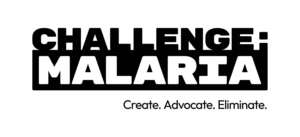

Trade Mark Journal No.2025/028 11 July 2025
UK00004226880 30 June 2025 (14,16,25,32,33,35,36,41)

- Class 14
- Jewellery, namely bracelets and bracelets made of embroidered textile.
- Class 16
- Printed matter, publications, magazines, brochures, leaflets, posters, information and promotional material; stationery, envelopes and paper articles of stationery.
- Class 25
- Clothing namely, t-shirts, tees and vests.
- Class 32
- Beverages, namely drinking waters, flavoured waters, mineral and aerated waters; other non-alcoholic beverages, namely soft drinks, energy drinks and sports drinks; fruit drinks & juices.
- Class 33
- Alcoholic beverages (except beers), namely, alcoholic beverages containing fruit extracts and pre-mixed alcoholic beverages, other than beer-based.
- Class 35
- Advertising and publicity services; conducting market studies and producing market research; organisation of fairs and exhibitions for advertising purposes; publication of publicity texts.
- Class 36
- Provision and management of charitable fundraising; Providing information relating to charitable fundraising.
- Class 41
- Organising, arranging and hosting events, galas and dinners for the purposes of fundraising and entertainment; Educational services, namely conducting educational programs; arranging and conducting educational conferences; charitable services, namely, providing training in the field of prevention and treatment of illnesses.
Malaria No More United Kingdom
Representative: Page, White & Farrer Limited